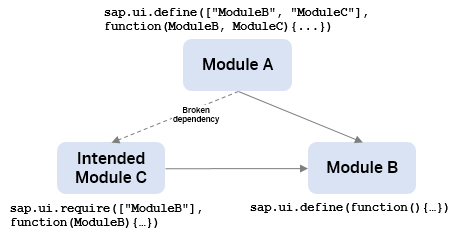
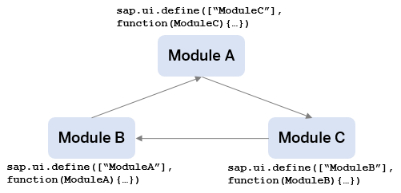

Troubleshooting for Loading Modules
The following sections give examples that you must avoid because they cause problems when loading your module.
Why was my Module Not Loaded Correctly?
The following list contains possible reasons why your module does not load. To see how it is done correctly, see Best Practices for Loading Modules - How to Define Modules.
The module name is given in sap.ui.define
If you explicitly give the module name in sap.ui.define, you introduce additional complexity to the project structure which may cause inconcistencies and clashing module names. This problem is difficult to detect and can easily and proactively be avoided by omitting the module name in sap.ui.define.
The following example shows how it must not be done: The library file structure of myLib does not fit the module name. If there is another module named MyModule in the myLib library, the module would be hard to address. If you use an unnamed module instead, the module names would reflect the library file structure. By this, you reduce the probability of module name conflicts. In general, when addressing UI5 modules, make sure you separate all parts of the module's name with slashes instead of dots, for example myLib/MyModule instead of myLib.MyModule.
myLib/myAdditionalPathSegment/MyModule.js
// CAUTION: BAD EXAMPLE - DON'T DO THIS
sap.ui.define("myLib.MyModule", [], function(){
...
});
Using multiple sap.ui.define calls with unnamed modules
If you have more than one sap.ui.define call in a JavaScript file, the
module loader does not know which definition actually represents the module. As
there is no scenario that requires multiple module definitions in one file and
in order to comply with the AMD specification (see https://github.com/amdjs/amdjs-api/wiki/AMD ), the
async variant of the OpenUI5 module
loader does not tolerate multiple definitions anymore and throws an
error.
), the
async variant of the OpenUI5 module
loader does not tolerate multiple definitions anymore and throws an
error.
Example: The myModule module is defined twice. This was most probably done by accident. To resolve this, the two module definitions have to be split into two separate modules.
myModule.js
// BAD EXAMPLE - DON'T DO THIS
sap.ui.define([], function(){
...
});
sap.ui.define([], function(){
...
});
Combining conditional modules with sap.ui.define
Conditional module definitions should not be used because of the following reasons:
-
The modules cannot be required with parameters because the check conditions are related to globals.
-
The export value is not consistent. This makes it difficult to consume the module.
-
The module dependencies are unclear. This prevents an efficient module bundling.
Example: The export value of myModule depends on the global myProperty property. In this case, it makes sense to split the two definitions into separate files for example into the two variants myModuleA and myModuleB. Another module can then make the required myProperty check and require the variant of myModule via sap.ui.require.
myModule.js
// BAD EXAMPLE - DON'T DO THIS
if (myProperty){
sap.ui.define([], function(){
...
});
else {
sap.ui.define([], function(){
...
});
}
Mixing old and new loader APIs
Using deprecated APIs is not recommended and mixing old and new loader APIs is even worse: If the synchronicity has changed between older and newer APIs, mixing them will cause timing-related issues as well as general inconsistencies.
Example: The namespace myLib.myModule is registered through the jQuery.sap.declare call. Besides actually defining the module export value, the subsequent sap.ui.define call does the same registration. So, the jQuery.sap.declare in this example is unnecessary and must be omitted in this example.
myLib/MyModule.js
// BAD EXAMPLE - DON'T DO THIS
jQuery.sap.declare("myLib.myModule");
sap.ui.define([], function(){
...
});
Using sap.ui.require instead of sap.ui.define on the top level
Although the API signature for sap.ui.define and sap.ui.require looks similar, you must use the sap.ui.define API to define a reusable JavaScript object (that is, a module). Note the following differences between sap.ui.require and sap.ui.define:
|
Action |
sap.ui.require |
sap.ui.define |
|---|---|---|
|
Value export |
Not possible |
The callback function defines an export to provide functionality to other modules. |
|
Module name registration |
Not possible |
The module name is registered at the loader registry and can be used to address the module. |
|
Relative dependencies |
This is not possible, because no module name is registered and a reference point is missing. |
Can be used. |
|
Execution order |
Dependent modules can be executed before the sap.ui.require callback has been executed. Therefore, using sap.ui.require instead of sap.ui.define can break the intended dependency graph and module execution order. |
The dependent modules are waiting for the module callback execution to be finished. |
Example: The file for module C has one top-level sap.ui.require instead of a top-level sap.ui.define call. The module callback evaluation order starts with module B, because it has no dependencies. Afterwards, the framework can execute module A or module C, because the intended module C is not a module from the module loader perspective. Furthermore, the undefined export value of module C will most probably lead to errors in module A. If module C is defined correctly via a top-level sap.ui.define call, the module callback execution order is clear: B - C - A.
Defining (unnamed) modules via inline scripts
It is unclear how modules that are defined via inline scripts can by addresses by other modules. Therefore, the inline scripts must be omitted.
Example: Module A is defined after bootstrapping UI5 and before the actual app is started. As the module is not addressable, the module definition must be moved to a separate file.
<!-- BAD EXAMPLE - DON'T DO THIS -->
<html>
...
<script>
//Boot UI5
</script>
<script>
//Definition for Module A
sap.ui.define(function(){
...
});
</script>
<script>
// Start UI5 Application
</script>
...
</html>Avoiding synchronous access to a module definition export
Never do a synchronous access to the export of a module definition because the module definition could be done asynchronously. Never rely on the synchronicity of a module definition, even if a module has no dependencies.
Example: The sap.ui.define call for the myModule module is made and the export value is synchronously used by creating a new object of that export. Although this may work in some scenarios, never do it this way, because it is unclear whether the module definition is already done. Instead, use the export of myModule in a separate module with a correctly maintained dependency to the myModule module.
myLib/MyModule.js
// BAD EXAMPLE - DON'T DO THIS
sap.ui.define([], function(){
...
});
...
var oMyModule = new myLib.MyModule();
...
For more information, see the API Reference for sap.ui.define - Asynchronuous Contract.
Avoid synchronous probing after module definition
Similar to the synchronous access of a module's export value, you also must omit the synchronous probing for modules defined in the same browser task.
Example: The sap.ui.define call for the myModule module is made and is synchronously checked by probing through calling sap.ui.require. Instead, the probing for myModule must be done in a separate module with a correctly maintained dependency to myModule.
myLib/MyModule.js
// BAD EXAMPLE - DON'T DO THIS
sap.ui.define([], function(){
...
});
var MyModule = sap.ui.require('myLib/MyModule');
What is wrong with the way I am addressing the modules?
The following examples show how you should not address a module. To see how it is done correctly, see Best Practices for Loading Modules - How to Address Modules.
Case insensitivity when addressing modules
Addressing a module inconsistently can cause various side-effects. If the server is not case sensitive, for example, the same resource can be addressed with URLs that differ only in case sensitivity. Besides that, it is bad from a performance perspective if the same resource is loaded twice and the same module is defined twice. This is similar to the example for multiple definitions above: multiple definitions of the same module can cause several issues, such as failing checks of instanceof.
Example: If we assume a server that is not case-sensitive, the sap.m library's Button control is loaded and evaluated twice.
myView.xml
<!-- BAD EXAMPLE - DON'T DO THIS -->
<mvc:View xmlns:mvc="sap.ui.core.mvc" xmlns:m="sap.m">
...
<m:Button></m:Button>
<m:button></m:button>
...
</mvc:View>
myModule.js
...
// BAD EXAMPLE - DON'T DO THIS
sap.ui.require(['sap/m/button'], function(){
...
});
sap.ui.require(['sap/m/Button'], function(){
...
});
...
Manual loading of UI5 modules via script tags
When you load modules manually, the module loader cannot know how the module shall be named. Therefore, UI5 modules must always be loaded and evaluated via the UI5 module loader APIs.
Example: The myModule module is loaded via a script tag. Instead, use a sap.ui.require call to loading the module.
startMyApp.js
<html>
...
<script src="https://myhost/mypath/myModule.js"></script>
...
</html>
How can I remove project structures with cyclic dependencies?
When you use cyclic dependencies in the project structure, the module dependencies cannot be resolved. The UI5 module loade detects the cycle and returns an undefined value instead of the correct module export.
As an exception, in specific scenarios, you may make the involved modules robust enough to handle undefined module exports at module callback execution time and use the export value via probing later. However, if you use the async variant of the loader, all modules that belong to a cycle must be able to handle undefined exports.
To see how to set up a correct project structure, see Best Practices for Loading Modules - How to Structure a Project.
Example: All modules have exactly one dependency, which cannot be resolved correctly.
Solution 1 – Resolved cycle: The following figure shows how the cycle can be resolved by moving the functionality of module A, which is used by module B, to a separate module (module A2). In general, resolving cyclic dependencies can require a larger refactoring of all involved modules, especially when multiple cycles have to be resolved.

Solution 2 – Probing modules: In the example given in the following figure, the cycle is not resolved, but the involved modules do not access the dependent modules directly when the module callback is executed. They access them later via probing.